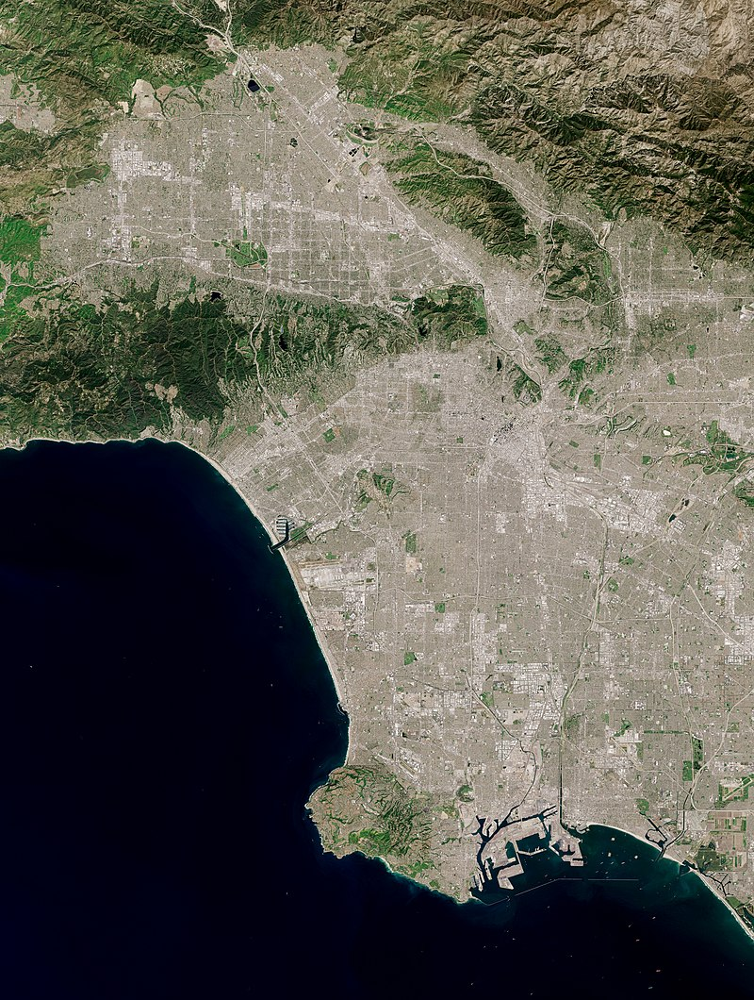

The Los Angeles coastal area was settled by the Tongva (Gabrieleño) and Chumash tribes. Los Angeles was founded on the village of iyáanga’ or Yaanga (written "Yang-na" by the Spanish), meaning "poison oak place" explorer Juan Rodríguez Cabrillo claimed the area of southern California for the Spanish Empire in 1542 while on an official military exploring expedition moving northward along the Pacific coast from earlier colonizing bases of New Spain in Central and South America.Gaspar de Portolà and Franciscan missionary Juan Crespí reached the present site of Los Angeles on August 2, 1769.Spanish rule
The city of Los Angeles covers a total area of 502.7 square miles (1,302 km2), comprising 468.7 square miles (1,214 km2) of land and 34.0 square miles (88 km2) of water.[74] The city extends for 44 miles (71 km) north-south and for 29 miles (47 km) east-west. The perimeter of the city is 342 miles (550 km).
